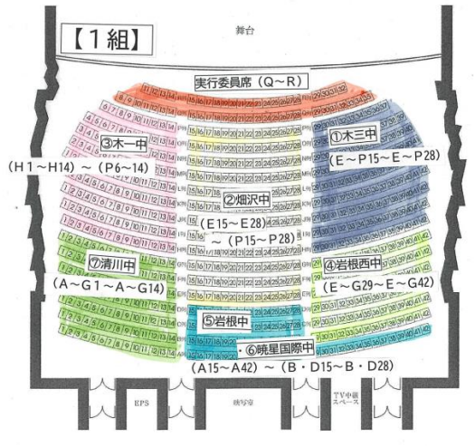
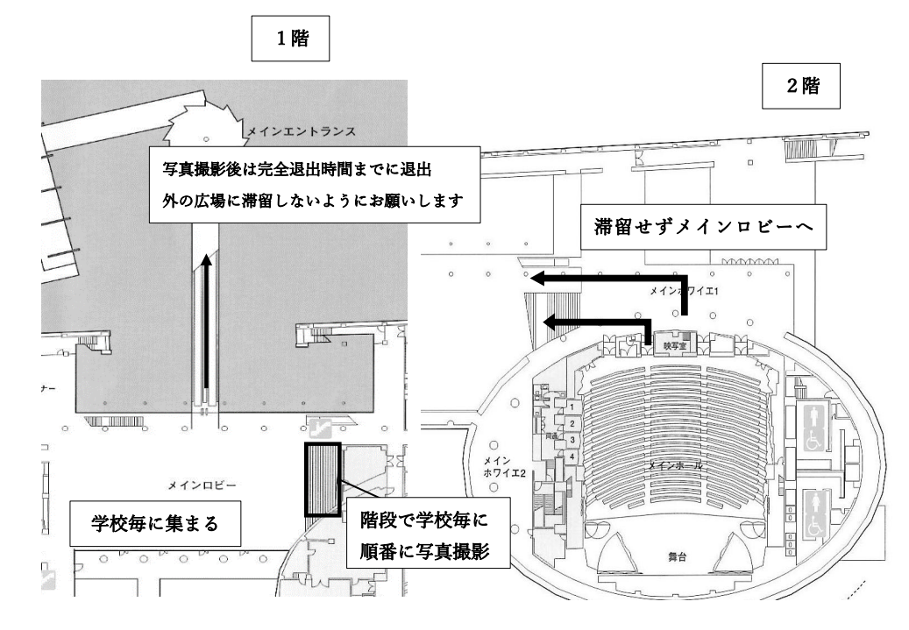

入退場について
- 開場時間までメインエントランス前で待機してください。
- 受付にて持ち物チェックを行います（酒類・危険物NG）。
- 入退場後はロビーに留まらず、ホールへ向かってください。
- 式典終了後、木更津第三中学校は一番最後に退場します。
座席について
学校ごとに指定のエリアに着席してください。
木更津第三中学校： (P29~P37) ～ (H29~H42)

写真撮影について
退場後、集合写真の撮影があります。
木更津第三中学校は一番最初に撮影を行いますので、速やかに移動をお願いします。
▼ 撮影時の動き
完全退出時間は 12時30分 です。